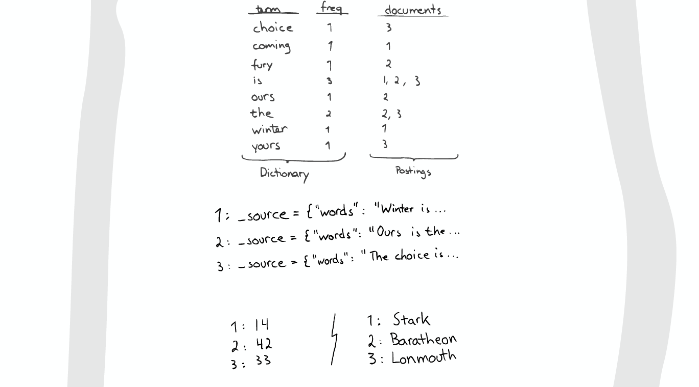
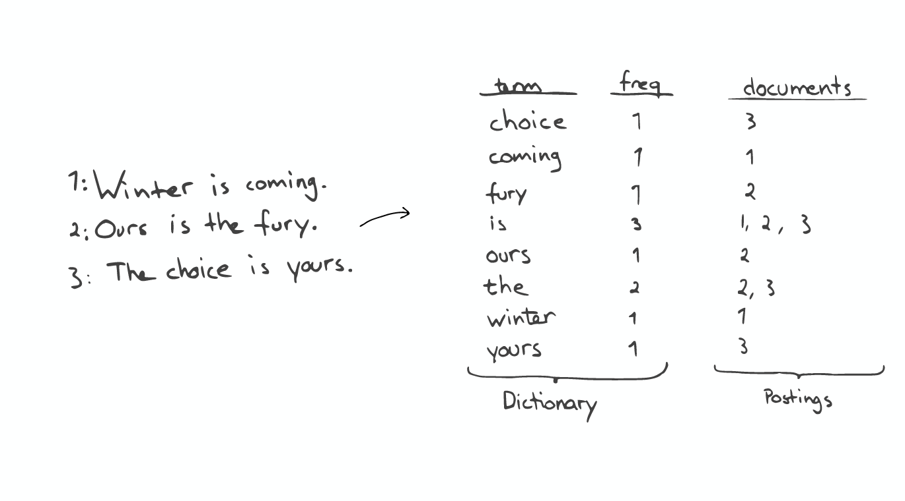
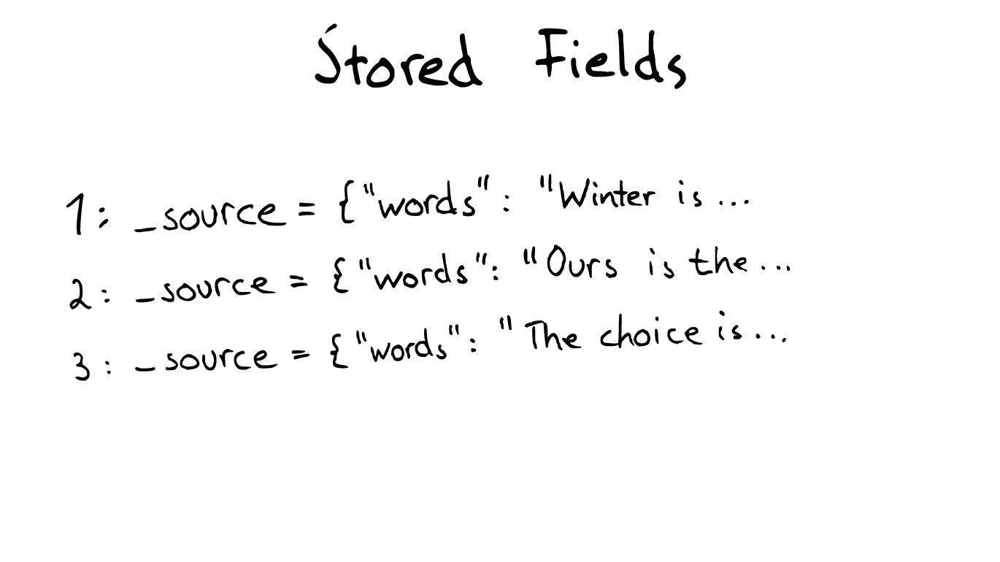
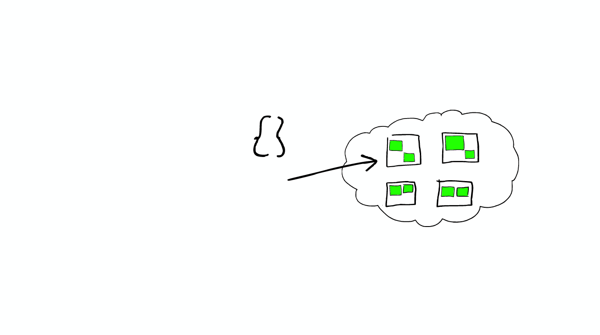
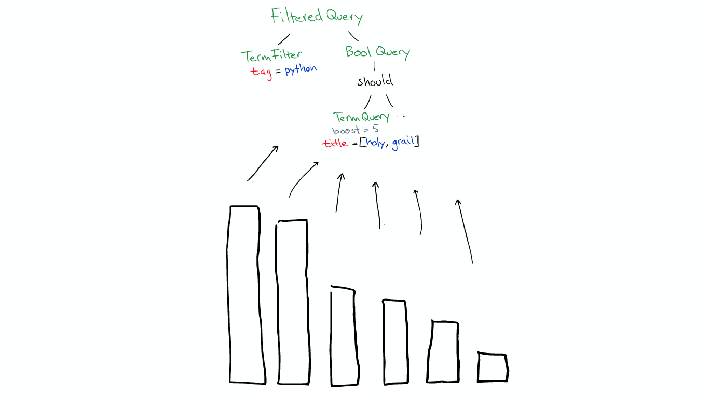
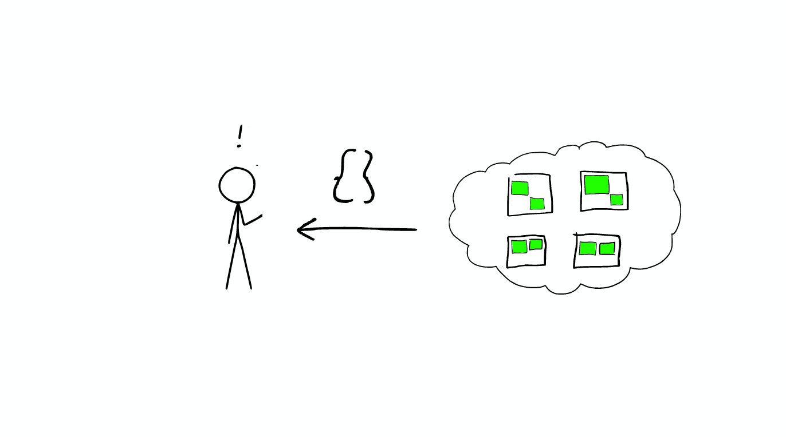

- 01 认知：ElasticSearch基础概念.md.html
- 02 认知：Elastic Stack生态和场景方案.md.html
- 03 安装：ElasticSearch和Kibana安装.md.html
- 04 入门：查询和聚合的基础使用.md.html
- 05 索引：索引管理详解.md.html
- 06 索引：索引模板(Index Template)详解.md.html
- 07 查询：DSL查询之复合查询详解.md.html
- 08 查询：DSL查询之全文搜索详解.md.html
- 09 查询：DSL查询之Term详解.md.html
- 10 聚合：聚合查询之Bucket聚合详解.md.html
- 11 聚合：聚合查询之Metric聚合详解.md.html
- 12 聚合：聚合查询之Pipline聚合详解.md.html
- 13 原理：从图解构筑对ES原理的初步认知.md.html
- 14 原理：ES原理知识点补充和整体结构.md.html
- 15 原理：ES原理之索引文档流程详解.md.html
- 16 原理：ES原理之读取文档流程详解.md.html
- 17 优化：ElasticSearch性能优化详解.md.html
- 18 大厂实践：腾讯万亿级 Elasticsearch 技术实践.md.html
- 19 资料：Awesome Elasticsearch.md.html
- 20 WrapperQuery.md.html
- 21 备份和迁移.md.html
- 捐赠
13 原理：从图解构筑对ES原理的初步认知
前言
本文先自上而下，后自底向上的介绍ElasticSearch的底层工作原理，试图回答以下问题：
- 为什么我的搜索
*foo-bar*无法匹配foo-bar？ - 为什么增加更多的文件会压缩索引（Index）？
- 为什么ElasticSearch占用很多内存？
版本
elasticsearch版本: elasticsearch-2.2.0
图解ElasticSearch
- 云上的集群

- 集群里的盒子
云里面的每个白色正方形的盒子代表一个节点——Node。
- 节点之间
在一个或者多个节点直接，多个绿色小方块组合在一起形成一个ElasticSearch的索引。

- 索引里的小方块
在一个索引下，分布在多个节点里的绿色小方块称为分片——Shard。
- Shard＝Lucene Index
一个ElasticSearch的Shard本质上是一个Lucene Index。
Lucene是一个Full Text 搜索库（也有很多其他形式的搜索库），ElasticSearch是建立在Lucene之上的。接下来的故事要说的大部分内容实际上是ElasticSearch如何基于Lucene工作的。
图解Lucene
Segment
- Mini索引——segment
在Lucene里面有很多小的segment，我们可以把它们看成Lucene内部的mini-index。

- Segment内部
（有着许多数据结构）
- Inverted Index
- Stored Fields
- Document Values
- Cache

Inverted Index
最最重要的Inverted Index

Inverted Index主要包括两部分：
- 一个有序的数据字典Dictionary（包括单词Term和它出现的频率）。
- 与单词Term对应的Postings（即存在这个单词的文件）。
当我们搜索的时候，首先将搜索的内容分解，然后在字典里找到对应Term，从而查找到与搜索相关的文件内容。

- 查询“the fury”
- 自动补全（AutoCompletion-Prefix）
如果想要查找以字母“c”开头的字母，可以简单的通过二分查找（Binary Search）在Inverted Index表中找到例如“choice”、“coming”这样的词（Term）。
- 昂贵的查找
如果想要查找所有包含“our”字母的单词，那么系统会扫描整个Inverted Index，这是非常昂贵的。

在此种情况下，如果想要做优化，那么我们面对的问题是如何生成合适的Term。
- 问题的转化
对于以上诸如此类的问题，我们可能会有几种可行的解决方案：
* suffix -> xiffus *
如果我们想以后缀作为搜索条件，可以为Term做反向处理。
(60.6384, 6.5017) -> u4u8gyykk
对于GEO位置信息，可以将它转换为GEO Hash。
123 -> {1-hundreds, 12-tens, 123}
对于简单的数字，可以为它生成多重形式的Term。
- 解决拼写错误
一个Python库 为单词生成了一个包含错误拼写信息的树形状态机，解决拼写错误的问题。

Stored Field字段查找
当我们想要查找包含某个特定标题内容的文件时，Inverted Index就不能很好的解决这个问题，所以Lucene提供了另外一种数据结构Stored Fields来解决这个问题。本质上，Stored Fields是一个简单的键值对key-value。默认情况下，ElasticSearch会存储整个文件的JSON source。

Document Values为了排序，聚合
即使这样，我们发现以上结构仍然无法解决诸如：排序、聚合、facet，因为我们可能会要读取大量不需要的信息。
所以，另一种数据结构解决了此种问题：Document Values。这种结构本质上就是一个列式的存储，它高度优化了具有相同类型的数据的存储结构。
为了提高效率，ElasticSearch可以将索引下某一个Document Value全部读取到内存中进行操作，这大大提升访问速度，但是也同时会消耗掉大量的内存空间。
总之，这些数据结构Inverted Index、Stored Fields、Document Values及其缓存，都在segment内部。
搜索发生时
搜索时，Lucene会搜索所有的segment然后将每个segment的搜索结果返回，最后合并呈现给客户。
Lucene的一些特性使得这个过程非常重要：
- Segments是不可变的（immutable）
- Delete? 当删除发生时，Lucene做的只是将其标志位置为删除，但是文件还是会在它原来的地方，不会发生改变
- Update? 所以对于更新来说，本质上它做的工作是：先删除，然后重新索引（Re-index）
- 随处可见的压缩
- Lucene非常擅长压缩数据，基本上所有教科书上的压缩方式，都能在Lucene中找到。
- 缓存所有的所有
- Lucene也会将所有的信息做缓存，这大大提高了它的查询效率。
缓存的故事
当ElasticSearch索引一个文件的时候，会为文件建立相应的缓存，并且会定期（每秒）刷新这些数据，然后这些文件就可以被搜索到。
随着时间的增加，我们会有很多segments，
所以ElasticSearch会将这些segment合并，在这个过程中，segment会最终被删除掉

这就是为什么增加文件可能会使索引所占空间变小，它会引起merge，从而可能会有更多的压缩。
- 举个栗子
有两个segment将会merge

这两个segment最终会被删除，然后合并成一个新的segment

这时这个新的segment在缓存中处于cold状态，但是大多数segment仍然保持不变，处于warm状态。
以上场景经常在Lucene Index内部发生的。
在Shard中搜索
ElasticSearch从Shard中搜索的过程与Lucene Segment中搜索的过程类似。
与在Lucene Segment中搜索不同的是，Shard可能是分布在不同Node上的，所以在搜索与返回结果时，所有的信息都会通过网络传输。
需要注意的是：
1次搜索查找2个shard ＝ 2次分别搜索shard

- 对于日志文件的处理
当我们想搜索特定日期产生的日志时，通过根据时间戳对日志文件进行分块与索引，会极大提高搜索效率。
当我们想要删除旧的数据时也非常方便，只需删除老的索引即可。
在上种情况下，每个index有两个shards
- 如何Scale

shard不会进行更进一步的拆分，但是shard可能会被转移到不同节点上
所以，如果当集群节点压力增长到一定的程度，我们可能会考虑增加新的节点，这就会要求我们对所有数据进行重新索引，这是我们不太希望看到的，所以我们需要在规划的时候就考虑清楚，如何去平衡足够多的节点与不足节点之间的关系。
- 节点分配与Shard优化
- 为更重要的数据索引节点，分配性能更好的机器
- 确保每个shard都有副本信息replica

- 路由Routing
每个节点，每个都存留一份路由表，所以当请求到任何一个节点时，ElasticSearch都有能力将请求转发到期望节点的shard进一步处理。
一个真实的请求

- Query

Query有一个类型filtered，以及一个multi_match的查询
- Aggregation

根据作者进行聚合，得到top10的hits的top10作者的信息
- 请求分发
这个请求可能被分发到集群里的任意一个节点

- 上帝节点

这时这个节点就成为当前请求的协调者（Coordinator），它决定： a) 根据索引信息，判断请求会被路由到哪个核心节点 b) 以及哪个副本是可用的 c) 等等
- 路由

- 在真实搜索之前
ElasticSearch 会将Query转换成Lucene Query
然后在所有的segment中执行计算

对于Filter条件本身也会有缓存

但queries不会被缓存，所以如果相同的Query重复执行，应用程序自己需要做缓存
所以，
a) filters可以在任何时候使用 b) query只有在需要score的时候才使用
- 返回
搜索结束之后，结果会沿着下行的路径向上逐层返回。




参考来源
SlideShare: Elasticsearch From the Bottom Up
Youtube: Elasticsearch from the bottom up
Wiki: Document-term matrix
Wiki: Search engine indexing
Skip list
Standford Edu: Faster postings list intersection via skip pointers
StackOverflow: how an search index works when querying many words?
StackOverflow: how does lucene calculate intersection of documents so fast?
Lucene and its magical indexes
misspellings 2.0c: A tool to detect misspellings
© 2019 - 2023 Liangliang Lee. Powered by gin and hexo-theme-book.